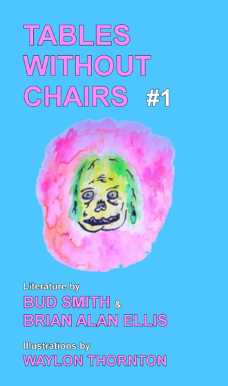

Tables Without Chairs: A Review
by Christopher Morgan Released late last year from House of Vlad, “Tables Without Chairs #1” throws its readers face-first into an carnival experience courtesy of Bud Smith and Brian Alan Ellis. Combining recurring characters and shout-outs with uncanny art by Waylon Thornton, this book intersperses quips and self-reflection to paint its wild collage. From the get-go, readers find the duo exchanging cover band ideas before moving to hilarious blurbs such as: “Brian Alan Ellis is like a scratch-off lottery ticket that you get for Christmas and HOLY SHIT I JUST WON $250 but your aunt who you owe $400 to is sitting right there so you hand it over and now it’s fresh in her mind that you still owe $150 FUCK! But he writes really good stories” (7). Besides clearly having a blast with the whole project, these writers manage to blend their respective styles of humor without ever losing speed, resulting in a lighthearted mood of leaking hot tubs and hellacious half-friends that continues to surprise.
A dark turntable celebration in the face of desertion, Brian Alan Ellis’s first half, “Sexy Time in the Spook House, Oh Yeah!” kick-starts the show with a werewolf of a fellow on the rebound. Both resisting and seeking sexy times “for this nightmare to scare us both awake” (27), Ellis’s main character hangs himself on the words of others, remembering his lost lover. Yet from this chaotic violence where “Nobody is good to one another. Nobody is good to anyone” (35), Ellis shifts gears entirely in his second section.
“Ha-Ha! Sad Laughter” unfolds as an anti-literary litany, unloading non-stop cynicism and what-ifs to take on postal submissions, Goodreads trolling, and the #amwriting hashtag, among others. Rather than simply attacking the literary establishment with an outsider’s shallow contempt, Ellis confronts the scene’s sacred cows with an insider’s irony. Across thirty pages of fragments, we find suggestions for poetry readings at EDM raves, rejected submissions for a 25-words-only short story contest, 4 pages of pre-written blurbs, and other gems for making it big: “When at AWP, a productive thing to do is to frantically ask random people if they know what time Smash Mouth goes on” (70). Striking the right balance between self-deprecation and smugness, Brian Alan Ellis makes us laugh with one-liners like “Pop-Tart prize > Pushcart Prize” (58), while also bringing in relatable gloom from the writer’s life, trading your first novel for Burger King Groupons or hearing, “Good news: Your book just went into its third printing—meaning that it is print-on-demand and only three people have purchased it” (70).
After Ellis’s dark adventures and proposals for an “MFA in creative hiding” (80), Bud Smith brings readers into “Calm Face,” ten stories of everyday moments imbued with a kind of smooth wonder. Sometimes you forget your badge for work during a hectic morning commute, but everything falls into place so you don’t miss 30 minutes of pay (and you manage to steal a 5 gallon jug of gas to boot)! Whether laughing with his wife on mushrooms during freezing late night walks, or watching somebody almost get run over because there’s “NO SUCH THING AS HOLDING SPOTS” (96) in the world of big-city parking, Smith’s characters wander through so many quick, random moments, making us laugh at their oddness. In fact, true to Smith’s title, these characters somehow manage to keep calm in the face of an anxious world, just as the Zen-like main character from “Apartment 13,” talking about his neighbor:
Throughout his stories, Smith shows we can let everything build up until it gets scary, or we can strip down and submerge into your apartment-flooding hot tub when people start pounding on your door!
In a world of mental health days, 50 mousetraps in need of opening, and writer residencies where “you stay where you are but you stop paying rent. The residency ends when your landlord calls the police” (46), Brian Alan Ellis and Bud Smith are on a mission to kick ass and gather laughs, or die trying. These wild novellas serve up truths of heartbreak and drudgery with laidback charm—like a collision within a floor-shifting fun house, “Tables Without Chairs #1” keeps us smiling as it combines our monsters with the daily 9-to-5 grind.
Find “Tables Without Chairs #1” from House of Vlad as both Paperback and E-book here
Brian Alan Ellis can be found on Twitter and Tumblr, and has a book of humorous non-fiction coming out in March from House of Vlad called “A Series of Pained Facial Expressions Made While Shredding Air Guitar”
Bud Smith can be found on his website and Twitter, and has a novel coming out in April from Artistically Declined Press called “I’m From Electric Peak”
Brian and Bud are currently reading subs for “Tables Without Chairs #2”— an anthology of Bad Jobs. Send your suffering to House of Vlad!
Review by Christopher Morgan